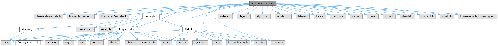

|
FFmpegfs Fuse Multi Media Filesystem 2.19
|
FFmpegfs utility set implementation. More...
#include <libswscale/swscale.h>#include "libavutil/ffversion.h"#include <libavcodec/avcodec.h>#include "id3v1tag.h"#include "ffmpegfs.h"#include "ffmpeg_utils.h"#include <iostream>#include <libgen.h>#include <algorithm>#include <wordexp.h>#include <memory>#include <fstream>#include <locale>#include <vector>#include <cstring>#include <functional>#include <chrono>#include <thread>#include <iconv.h>#include <chardet.h>#include <fnmatch.h>#include <unistd.h>#include <libswresample/swresample.h>
Go to the source code of this file.
Macros | |
| #define | AV_ERROR_MAX_STRING_SIZE 128 |
| Max. length of a FFmpeg error string. | |
| #define | PRINT_LIB_INFO(libname, LIBNAME) |
| Print info about a FFmpeg library. | |
| #define | STR_VALUE(arg) #arg |
| Convert macro to string. | |
| #define | X(name) STR_VALUE(name) |
| Convert macro to string. | |
Typedefs | |
| typedef std::map< const std::string, const FILETYPE, comp > | FILETYPE_MAP |
| Map of file type. One entry per supported type. | |
Functions | |
| static int | is_device (__attribute__((unused)) const AVClass *avclass) |
| Check if class is a FMmpeg device. | |
| static std::string | ffmpeg_libinfo (bool lib_exists, __attribute__((unused)) unsigned int version, __attribute__((unused)) const char *cfg, int version_minor, int version_major, int version_micro, const char *libname) |
| Get FFmpeg library info. | |
| const std::string & | append_sep (std::string *path) |
| Add / to the path if required. | |
| const std::string & | append_filename (std::string *path, const std::string &filename) |
| Add filename to path, including / after the path if required. | |
| const std::string & | remove_sep (std::string *path) |
| Remove / from the path. | |
| const std::string & | remove_filename (std::string *filepath) |
| Remove filename from path. Handy dirname alternative. | |
| const std::string & | remove_path (std::string *filepath) |
| Remove path from filename. Handy basename alternative. | |
| const std::string & | remove_ext (std::string *filepath) |
| Remove extension from filename. | |
| bool | find_ext (std::string *ext, const std::string &filename) |
| Find extension in filename, if existing. | |
| bool | check_ext (const std::string &ext, const std::string &filename) |
| Check if filename has a certain extension. The check is case sensitive. | |
| const std::string & | replace_ext (std::string *filepath, const std::string &ext) |
| Replace extension in filename, taking into account that there might not be an extension already. | |
| const std::string & | append_ext (std::string *filepath, const std::string &ext) |
| Append extension to filename. If ext is the same as. | |
| std::shared_ptr< char[]> | new_strdup (const std::string &str) |
| strdup() variant taking a std::string as input. | |
| std::string | ffmpeg_geterror (int errnum) |
| Get FFmpeg error string for errnum. Internally calls av_strerror(). | |
| int64_t | ffmpeg_rescale_q (int64_t ts, const AVRational &timebase_in, const AVRational &timebase_out) |
| Convert a FFmpeg time from in timebase to outtime base. | |
| int64_t | ffmpeg_rescale_q_rnd (int64_t ts, const AVRational &timebase_in, const AVRational &timebase_out) |
| Convert a FFmpeg time from in timebase to out timebase with rounding. | |
| const char * | get_media_type_string (enum AVMediaType media_type) |
| av_get_media_type_string is missing, so we provide our own. | |
| std::string | ffmpeg_libinfo () |
| Get info about the FFmpeg libraries used. | |
| int | show_caps (int device_only) |
| Lists all supported codecs and devices. | |
| const char * | get_codec_name (AVCodecID codec_id, bool long_name) |
| Safe way to get the codec name. Function never fails, will return "unknown" on error. | |
| int | mktree (const std::string &path, mode_t mode) |
| Make directory tree. | |
| void | tempdir (std::string &path) |
| Get temporary directory. | |
| int | supports_albumart (FILETYPE filetype) |
| Check if file type supports album arts. | |
| FILETYPE | get_filetype (const std::string &desttype) |
| Get the FFmpegfs filetype, desttype must be one of FFmpeg's "official" short names for formats. | |
| std::string | get_filetype_text (FILETYPE filetype) |
| Convert FILETYPE enum to human readable text. | |
| FILETYPE | get_filetype_from_list (const std::string &desttypelist) |
| Get the FFmpegfs filetype, desttypelist must be a comma separated list of FFmpeg's "official" short names for formats. Will return the first match. Same as get_filetype, but accepts a comma separated list. | |
| void | init_id3v1 (ID3v1 *id3v1) |
| Initialise ID3v1 tag. | |
| std::string | format_number (int64_t value) |
| Format numeric value. | |
| std::string | format_bitrate (BITRATE value) |
| Format a bit rate. | |
| std::string | format_samplerate (int value) |
| Format a samplerate. | |
| std::string | format_duration (int64_t value, uint32_t fracs) |
| Format a time in format HH:MM:SS.fract. | |
| std::string | format_time (time_t value) |
| Format a time in format "w d m s". | |
| std::string | format_size (uint64_t value) |
| Format size. | |
| std::string | format_size_ex (uint64_t value) |
| Format size. | |
| std::string | format_result_size (size_t size_resulting, size_t size_predicted) |
| Format size of transcoded file including difference between predicted and resulting size. | |
| std::string | format_result_size_ex (size_t size_resulting, size_t size_predicted) |
| Format size of transcoded file including difference between predicted and resulting size. | |
| static void | print_fps (double d, const char *postfix) |
| Print frames per second. | |
| int | print_stream_info (const AVStream *stream) |
| Print info about an AVStream. | |
| std::string | fourcc_make_string (std::string *buf, uint32_t fourcc) |
| void | exepath (std::string *path) |
| Path to FFmpegfs binary. | |
| std::string & | ltrim (std::string &s) |
| trim from start | |
| std::string & | rtrim (std::string &s) |
| trim from end | |
| std::string & | trim (std::string &s) |
| trim from both ends | |
| std::string | replace_all (std::string str, const std::string &from, const std::string &to) |
| Same as std::string replace(), but replaces all occurrences. | |
| std::string | replace_all (std::string *str, const std::string &from, const std::string &to) |
| Same as std::string replace(), but replaces string in-place. | |
| bool | replace_start (std::string *str, const std::string &from, const std::string &to) |
| Replace start of string from "from" to "to". | |
| int | strcasecmp (const std::string &s1, const std::string &s2) |
| strcasecmp() equivalent for std::string. | |
| int | reg_compare (const std::string &value, const std::string &pattern, std::regex::flag_type flag) |
| Compare value with pattern. | |
| const std::string & | expand_path (std::string *tgt, const std::string &src) |
| Expand path, e.g., expand ~/ to home directory. | |
| int | is_mount (const std::string &path) |
| Check if path is a mount. | |
| std::vector< std::string > | split (const std::string &input, const std::string ®ex) |
| Split string into an array delimited by a regular expression. | |
| std::string | sanitise_filepath (std::string *filepath) |
| Sanitise file name. Calls realpath() to remove duplicate // or resolve ../.. etc. Changes the path in place. | |
| std::string | sanitise_filepath (const std::string &filepath) |
| Sanitise file name. Calls realpath() to remove duplicate // or resolve ../.. etc. | |
| void | append_basepath (std::string *origpath, const char *path) |
| Translate file names from FUSE to the original absolute path. | |
| bool | is_album_art (AVCodecID codec_id, const AVRational *frame_rate) |
| Minimal check if codec is an album art. Requires frame_rate to decide whether this is a video stream if codec_id is not BMP or PNG (which means its undoubtedly an album art). For MJPEG this may also be a video stream if the frame rate is high enough. | |
| int | nocasecompare (const std::string &lhs, const std::string &rhs) |
| nocasecompare to make std::string find operations case insensitive | |
| size_t | get_disk_free (std::string &path) |
| Get free disk space. | |
| bool | check_ignore (size_t size, size_t offset) |
| For use with win_smb_fix=1: Check if this an illegal access offset by Windows. | |
| std::string | make_filename (uint32_t file_no, const std::string &fileext) |
| Make a file name from file number and file extension. | |
| bool | file_exists (const std::string &filename) |
| Check if file exists. | |
| void | make_upper (std::string *input) |
| Convert string to upper case. | |
| void | make_lower (std::string *input) |
| Convert string to lower case. | |
| const char * | hwdevice_get_type_name (AVHWDeviceType dev_type) |
| int | to_utf8 (std::string &text, const std::string &encoding) |
| Convert almost any encoding to UTF-8. To get a list of all possible encodings run "iconv --list". | |
| int | get_encoding (const char *str, std::string &encoding) |
| Try to detect the encoding of str. This is relatively realiable, but may be wrong. | |
| int | read_file (const std::string &path, std::string &result) |
| Read text file and return in UTF-8 format, no matter in which encoding the input file is. UTF-8/16/32 with BOM will always return a correct result. For all other encodings the function tries to detect it, that may fail. | |
| void | stat_set_size (struct stat *st, size_t size) |
| Properly fill in all size related members in stat struct. | |
| bool | detect_docker () |
| Detect if we are running under Docker. | |
| bool | is_text_codec (AVCodecID codec_id) |
| Check if subtitle codec is a text or graphical codec. | |
| int | get_audio_props (AVFormatContext *format_ctx, int *channels, int *samplerate) |
| Get first audio stream. | |
| const std::string & | regex_escape (std::string *str) |
| Escape characters that are meaningful to regexp. | |
| bool | is_selected (const std::string &ext) |
| Find extension in include list, if existing. | |
| bool | is_blocked (const std::string &filename) |
| Check if filename should be hidden from output path. | |
| void | save_free (void **p) |
| Savely free memory: Pointer will be set to nullptr before it is actually freed. | |
| void | mssleep (int milliseconds) |
| Sleep for specified time. | |
| void | ussleep (int microseconds) |
| Sleep for specified time. | |
| void | nssleep (int nanoseconds) |
| Sleep for specified time. | |
Variables | |
| static const FILETYPE_MAP | filetype_map |
FFmpegfs utility set implementation.
Definition in file ffmpeg_utils.cc.
| #define AV_ERROR_MAX_STRING_SIZE 128 |
Max. length of a FFmpeg error string.
Definition at line 94 of file ffmpeg_utils.cc.
| #define PRINT_LIB_INFO | ( | libname, | |
| LIBNAME | |||
| ) |
Print info about a FFmpeg library.
Definition at line 1254 of file ffmpeg_utils.cc.
| #define STR_VALUE | ( | arg | ) | #arg |
Convert macro to string.
Definition at line 1568 of file ffmpeg_utils.cc.
| #define X | ( | name | ) | STR_VALUE(name) |
Convert macro to string.
Definition at line 1569 of file ffmpeg_utils.cc.
| typedef std::map<const std::string, const FILETYPE, comp> FILETYPE_MAP |
Map of file type. One entry per supported type.
Definition at line 97 of file ffmpeg_utils.cc.
| void append_basepath | ( | std::string * | origpath, |
| const char * | path | ||
| ) |
Translate file names from FUSE to the original absolute path.
| [out] | origpath | - Upon return, contains the name and path of the original file. |
| [in] | path | - Filename and relative path of the original file. |
Definition at line 2017 of file ffmpeg_utils.cc.
Referenced by ffmpegfs_getattr(), ffmpegfs_open(), ffmpegfs_read(), ffmpegfs_readdir(), ffmpegfs_readlink(), and ffmpegfs_statfs().
| const std::string & append_ext | ( | std::string * | filepath, |
| const std::string & | ext | ||
| ) |
Append extension to filename. If ext is the same as.
| [in] | filepath | - Filename to add extension to. |
| [in] | ext | - Extension to add. |
Definition at line 1105 of file ffmpeg_utils.cc.
References strcasecmp().
Referenced by check_cuesheet(), parse_cuesheet(), and virtual_name().
| const std::string & append_filename | ( | std::string * | path, |
| const std::string & | filename | ||
| ) |
Add filename to path, including / after the path if required.
| [in] | path | - Path to add filename to. |
| [in] | filename | - File name to add. |
Definition at line 992 of file ffmpeg_utils.cc.
References append_sep().
Referenced by find_original(), and Cache::load_index().
| const std::string & append_sep | ( | std::string * | path | ) |
Add / to the path if required.
| [in] | path | - Path to add separator to. |
Definition at line 982 of file ffmpeg_utils.cc.
Referenced by append_filename(), check_bluray(), check_cuesheet(), check_dvd(), check_vcd(), ffmpegfs_getattr(), ffmpegfs_opt_proc(), ffmpegfs_readdir(), VCDUTILS::get_directory(), insert_dir(), main(), parse_cuesheet(), remove_filename(), and transcoder_cache_path().
| bool check_ext | ( | const std::string & | ext, |
| const std::string & | filename | ||
| ) |
Check if filename has a certain extension. The check is case sensitive.
| ext | - Extension to check. |
| filename | - Filename to check |
Definition at line 1077 of file ffmpeg_utils.cc.
References find_ext().
Referenced by ffmpegfs_getattr().
| bool check_ignore | ( | size_t | size, |
| size_t | offset | ||
| ) |
For use with win_smb_fix=1: Check if this an illegal access offset by Windows.
| [in] | size | - sizeof of the file |
| [in] | offset | - offset at which file is accessed |
Definition at line 2075 of file ffmpeg_utils.cc.
Referenced by transcoder_read().
| bool detect_docker | ( | ) |
Detect if we are running under Docker.
Definition at line 2416 of file ffmpeg_utils.cc.
Referenced by main().
| void exepath | ( | std::string * | path | ) |
Path to FFmpegfs binary.
| [in] | path | - Path to FFmpegfs binary. |
Definition at line 1804 of file ffmpeg_utils.cc.
Referenced by prepare_script().
| const std::string & expand_path | ( | std::string * | tgt, |
| const std::string & | src | ||
| ) |
Expand path, e.g., expand ~/ to home directory.
| [out] | tgt | - Expanded source path. |
| [in] | src | - Path to expand. |
Definition at line 1895 of file ffmpeg_utils.cc.
Referenced by ffmpegfs_opt_proc(), main(), and transcoder_cache_path().
| std::string ffmpeg_geterror | ( | int | errnum | ) |
Get FFmpeg error string for errnum. Internally calls av_strerror().
| [in] | errnum | - FFmpeg error code. |
Definition at line 1136 of file ffmpeg_utils.cc.
Referenced by FFmpeg_Transcoder::add_albumart_frame(), FFmpeg_Transcoder::add_albumart_stream(), FFmpeg_Transcoder::add_external_subtitle_stream(), FFmpeg_Transcoder::add_samples_to_fifo(), FFmpeg_Transcoder::add_stream(), FFmpeg_Transcoder::add_stream_copy(), FFmpeg_Transcoder::add_subtitle_stream(), FFmpeg_Transcoder::alloc_picture(), FFmpeg_Transcoder::convert_samples(), FFmpeg_Transcoder::create_audio_frame(), FFmpeg_Transcoder::decode(), FFmpeg_Transcoder::decode_audio_frame(), FFmpeg_Transcoder::decode_frame(), FFmpeg_Transcoder::decode_subtitle(), FFmpeg_Transcoder::decode_subtitle(), FFmpeg_Transcoder::decode_video_frame(), FFmpeg_Base::dict_set_with_check(), FFmpeg_Base::dict_set_with_check(), FFmpeg_Transcoder::encode_audio_frame(), FFmpeg_Transcoder::encode_image_frame(), FFmpeg_Transcoder::encode_subtitle(), FFmpeg_Transcoder::encode_video_frame(), FFmpeg_Transcoder::flush_delayed_audio(), FFmpeg_Transcoder::flush_delayed_video(), FFmpeg_Transcoder::foreach_subtitle_file(), FFmpeg_Transcoder::hwdevice_ctx_add_ref(), FFmpeg_Transcoder::hwdevice_ctx_create(), FFmpeg_Transcoder::hwframe_copy_from_hw(), FFmpeg_Transcoder::hwframe_copy_to_hw(), FFmpeg_Transcoder::hwframe_ctx_set(), FFmpeg_Transcoder::init_audio_output_frame(), FFmpeg_Transcoder::init_converted_samples(), FFmpeg_Transcoder::init_deinterlace_filters(), FFmpeg_Transcoder::init_resampler(), log_transcoding_result(), FFmpeg_Transcoder::open_albumarts(), FFmpeg_Transcoder::open_bestmatch_audio(), FFmpeg_Transcoder::open_bestmatch_decoder(), FFmpeg_Transcoder::open_bestmatch_video(), FFmpeg_Transcoder::open_decoder(), FFmpeg_Transcoder::open_input_file(), FFmpeg_Transcoder::open_output(), FFmpeg_Transcoder::open_subtitles(), FFmpeg_Base::opt_set_with_check(), parse_file(), FFmpeg_Transcoder::read_decode_convert_and_store(), FFmpeg_Transcoder::send_filters(), FFmpeg_Transcoder::skip_decoded_frames(), FFmpeg_Transcoder::start_new_segment(), FFmpeg_Transcoder::store_packet(), FFmpeg_Transcoder::write_output_file_header(), and FFmpeg_Transcoder::write_output_file_trailer().
| std::string ffmpeg_libinfo | ( | ) |
Get info about the FFmpeg libraries used.
Definition at line 1256 of file ffmpeg_utils.cc.
Referenced by ffmpegfs_opt_proc().
|
static |
Get FFmpeg library info.
| [in] | lib_exists | - Set to true if library exists. |
| [in] | version | - Library version number. |
| [in] | cfg | - Library configuration. |
| [in] | version_minor | - Library version minor. |
| [in] | version_major | - Library version major. |
| [in] | version_micro | - Library version micro. |
| [in] | libname | - Name of the library. |
Definition at line 1234 of file ffmpeg_utils.cc.
References strsprintf().
| int64_t ffmpeg_rescale_q | ( | int64_t | ts, |
| const AVRational & | timebase_in, | ||
| const AVRational & | timebase_out = av_get_time_base_q() |
||
| ) |
Convert a FFmpeg time from in timebase to outtime base.
If out time base is omitted, returns standard AV_TIME_BASE fractional seconds Avoids conversion of AV_NOPTS_VALUE.
| [in] | ts | - Time in input timebase. |
| [in] | timebase_in | - Input timebase. |
| [in] | timebase_out | - Output timebase, defaults to AV_TIMEBASE if unset. |
Definition at line 1172 of file ffmpeg_utils.cc.
Referenced by FFmpeg_Transcoder::add_albumart_stream(), FFmpeg_Transcoder::add_stream(), FFmpeg_Transcoder::add_stream_copy(), FFmpeg_Transcoder::add_subtitle_stream(), FFmpeg_Transcoder::create_audio_frame(), FFmpeg_Transcoder::decode(), FFmpeg_Transcoder::decode_frame(), FFmpeg_Transcoder::encode_subtitle(), FFmpeg_Transcoder::encode_video_frame(), FFmpeg_Transcoder::open_bestmatch_audio(), FFmpeg_Transcoder::open_bestmatch_video(), FFmpeg_Transcoder::open_input_file(), FFmpeg_Transcoder::open_output(), FFmpeg_Transcoder::read_decode_convert_and_store(), and FFmpeg_Transcoder::start_new_segment().
| int64_t ffmpeg_rescale_q_rnd | ( | int64_t | ts, |
| const AVRational & | timebase_in, | ||
| const AVRational & | timebase_out = av_get_time_base_q() |
||
| ) |
Convert a FFmpeg time from in timebase to out timebase with rounding.
If out time base is omitted, returns standard AV_TIME_BASE fractional seconds Avoids conversion of AV_NOPTS_VALUE.
| [in] | ts | - Time in input timebase. |
| [in] | timebase_in | - Input timebase. |
| [in] | timebase_out | - Output timebase, defaults to AV_TIMEBASE if unset. |
Definition at line 1187 of file ffmpeg_utils.cc.
References AV_ROUND_PASS_MINMAX.
Referenced by FFmpeg_Base::audio_info(), FFmpeg_Transcoder::create_audio_frame(), FFmpeg_Transcoder::decode_video_frame(), FFmpeg_Transcoder::open_output(), FFmpeg_Transcoder::store_packet(), and FFmpeg_Base::video_info().
| bool file_exists | ( | const std::string & | filename | ) |
Check if file exists.
| [in] | filename | - File to check. |
Definition at line 2109 of file ffmpeg_utils.cc.
Referenced by Buffer::segment_exists().
| bool find_ext | ( | std::string * | ext, |
| const std::string & | filename | ||
| ) |
Find extension in filename, if existing.
| [in] | ext | - Extension, if found. |
| [in] | filename | - Filename to inspect. |
Definition at line 1057 of file ffmpeg_utils.cc.
Referenced by check_ext(), ffmpegfs_readdir(), find_original(), and virtual_name().
| std::string format_bitrate | ( | BITRATE | value | ) |
Format a bit rate.
| [in] | value | - Bit rate to format. |
Definition at line 1525 of file ffmpeg_utils.cc.
Referenced by FFmpeg_Transcoder::add_stream(), FFmpeg_Base::audio_info(), create_bluray_virtualfile(), create_dvd_virtualfile(), print_params(), and FFmpeg_Base::video_info().
| std::string format_duration | ( | int64_t | value, |
| uint32_t | fracs = 3 |
||
| ) |
Format a time in format HH:MM:SS.fract.
| [in] | value | - Time value in AV_TIME_BASE factional seconds. |
| [in] | fracs | - Fractional digits. |
Definition at line 1571 of file ffmpeg_utils.cc.
Referenced by FFmpeg_Base::audio_info(), create_bluray_virtualfile(), create_cuesheet_virtualfile(), create_dvd_virtualfile(), create_vcd_virtualfile(), FFmpeg_Transcoder::decode_frame(), FFmpeg_Transcoder::decode_video_frame(), print_params(), FFmpeg_Transcoder::store_packet(), and FFmpeg_Base::video_info().
| std::string format_number | ( | int64_t | value | ) |
Format numeric value.
| [in] | value | - Value to format. |
Definition at line 1509 of file ffmpeg_utils.cc.
Referenced by print_params().
| std::string format_result_size | ( | size_t | size_resulting, |
| size_t | size_predicted | ||
| ) |
Format size of transcoded file including difference between predicted and resulting size.
| [in] | size_resulting | - Resulting size. |
| [in] | size_predicted | - Predicted size. |
Definition at line 1696 of file ffmpeg_utils.cc.
References format_size().
| std::string format_result_size_ex | ( | size_t | size_resulting, |
| size_t | size_predicted | ||
| ) |
Format size of transcoded file including difference between predicted and resulting size.
| [in] | size_resulting | - Resulting size. |
| [in] | size_predicted | - Predicted size. |
Definition at line 1710 of file ffmpeg_utils.cc.
References format_size(), and strsprintf().
Referenced by transcode_finish().
| std::string format_samplerate | ( | int | value | ) |
Format a samplerate.
| [in] | value | - Sample rate to format. |
Definition at line 1549 of file ffmpeg_utils.cc.
Referenced by FFmpeg_Transcoder::add_stream(), FFmpeg_Base::audio_info(), create_bluray_virtualfile(), FFmpeg_Transcoder::init_resampler(), and print_params().
| std::string format_size | ( | uint64_t | value | ) |
Format size.
| [in] | value | - Size to format. |
Definition at line 1651 of file ffmpeg_utils.cc.
Referenced by create_bluray_virtualfile(), create_dvd_virtualfile(), format_result_size(), format_result_size_ex(), Buffer::map_file(), print_params(), and transcode().
| std::string format_size_ex | ( | uint64_t | value | ) |
Format size.
| [in] | value | - Size to format. |
Definition at line 1690 of file ffmpeg_utils.cc.
Referenced by transcode_finish(), transcoder_predict_filesize(), and transcoder_set_filesize().
| std::string format_time | ( | time_t | value | ) |
Format a time in format "w d m s".
| [in] | value | - Time value in AV_TIME_BASE factional seconds. |
Definition at line 1598 of file ffmpeg_utils.cc.
Referenced by print_params(), start_timer(), and transcode().
| std::string fourcc_make_string | ( | std::string * | buf, |
| uint32_t | fourcc | ||
| ) |
Fill the provided buffer with a string containing a FourCC (four-character code) representation.
| [in] | buf | - Upon return, filled in with the FourCC representation. |
| [in] | fourcc | - The fourcc to represent |
Definition at line 1795 of file ffmpeg_utils.cc.
| int get_audio_props | ( | AVFormatContext * | format_ctx, |
| int * | channels, | ||
| int * | samplerate | ||
| ) |
Get first audio stream.
| [in] | format_ctx | - Format context of file |
| [out] | channels | - Number of audio channels in stream |
| [out] | samplerate | - Audio sample rate of stream |
Definition at line 2465 of file ffmpeg_utils.cc.
Referenced by parse_file().
| const char * get_codec_name | ( | AVCodecID | codec_id, |
| bool | long_name = false |
||
| ) |
Safe way to get the codec name. Function never fails, will return "unknown" on error.
| [in] | codec_id | - ID of codec |
| [in] | long_name | - If true, gets the long name. |
Definition at line 1374 of file ffmpeg_utils.cc.
Referenced by FFmpeg_Transcoder::add_albumart_stream(), FFmpeg_Transcoder::add_stream(), FFmpeg_Transcoder::add_subtitle_stream(), FFmpeg_Base::audio_info(), FFmpeg_Transcoder::calculate_predicted_filesize(), FFmpeg_Transcoder::open_bestmatch_video(), FFmpeg_Transcoder::open_decoder(), print_params(), FFmpeg_Base::subtitle_info(), transcoder_set_filesize(), and FFmpeg_Base::video_info().
| size_t get_disk_free | ( | std::string & | path | ) |
Get free disk space.
| [in] | path | - Path or file on disk. |
Definition at line 2063 of file ffmpeg_utils.cc.
| int get_encoding | ( | const char * | str, |
| std::string & | encoding | ||
| ) |
Try to detect the encoding of str. This is relatively realiable, but may be wrong.
| [in] | str | - Text string to be checked. |
| [out] | encoding | - Detected encoding. |
Definition at line 2204 of file ffmpeg_utils.cc.
| FILETYPE get_filetype | ( | const std::string & | desttype | ) |
Get the FFmpegfs filetype, desttype must be one of FFmpeg's "official" short names for formats.
| [in] | desttype | - Destination type (MP4, WEBM etc.). |
Definition at line 1462 of file ffmpeg_utils.cc.
References filetype_map.
Referenced by FFmpegfs_Format::init().
| FILETYPE get_filetype_from_list | ( | const std::string & | desttypelist | ) |
Get the FFmpegfs filetype, desttypelist must be a comma separated list of FFmpeg's "official" short names for formats. Will return the first match. Same as get_filetype, but accepts a comma separated list.
| [in] | desttypelist | - Destination type list (MP4, WEBM etc.) separated by commas. |
Definition at line 1486 of file ffmpeg_utils.cc.
Referenced by FFmpeg_Transcoder::open_input_file().
| std::string get_filetype_text | ( | FILETYPE | filetype | ) |
Convert FILETYPE enum to human readable text.
| [in] | filetype | - FILETYPE enum value to convert. |
Definition at line 1475 of file ffmpeg_utils.cc.
Referenced by transcoder_set_filesize().
| const char * get_media_type_string | ( | enum AVMediaType | media_type | ) |
av_get_media_type_string is missing, so we provide our own.
| [in] | media_type | - Media type to map. |
Definition at line 1203 of file ffmpeg_utils.cc.
Referenced by FFmpeg_Transcoder::add_albumart_stream(), FFmpeg_Transcoder::add_stream(), FFmpeg_Transcoder::add_subtitle_stream(), FFmpeg_Transcoder::open_bestmatch_decoder(), and FFmpeg_Transcoder::open_decoder().
| const char * hwdevice_get_type_name | ( | AVHWDeviceType | dev_type | ) |
Save version of hwdevice_get_type_name: Get the string name of an AVHWDeviceType.
| [in] | dev_type | - Type from enum AVHWDeviceType. |
Definition at line 2128 of file ffmpeg_utils.cc.
Referenced by FFmpeg_Transcoder::get_hw_pix_fmt(), and FFmpeg_Transcoder::hwdevice_ctx_create().
| void init_id3v1 | ( | ID3v1 * | id3v1 | ) |
Initialise ID3v1 tag.
Definition at line 1499 of file ffmpeg_utils.cc.
Referenced by Cache_Entry::clear(), and FFmpeg_Transcoder::FFmpeg_Transcoder().
| bool is_album_art | ( | AVCodecID | codec_id, |
| const AVRational * | frame_rate = nullptr |
||
| ) |
Minimal check if codec is an album art. Requires frame_rate to decide whether this is a video stream if codec_id is not BMP or PNG (which means its undoubtedly an album art). For MJPEG this may also be a video stream if the frame rate is high enough.
| [in] | codec_id | - ID of codec. |
| [in] | frame_rate | - Video frame rate, if known. |
Definition at line 2029 of file ffmpeg_utils.cc.
Referenced by guess_format_idx(), FFmpeg_Transcoder::is_video(), FFmpeg_Transcoder::open_albumarts(), and parse_file().
| bool is_blocked | ( | const std::string & | filename | ) |
Check if filename should be hidden from output path.
| [in] | filename | - Name to check |
Definition at line 2512 of file ffmpeg_utils.cc.
Referenced by ffmpegfs_getattr(), and ffmpegfs_readdir().
|
static |
Check if class is a FMmpeg device.
| [in] | avclass | - Private class object |
Definition at line 1281 of file ffmpeg_utils.cc.
Referenced by show_caps().
| int is_mount | ( | const std::string & | path | ) |
Check if path is a mount.
| [in] | path | - Path to check. |
Definition at line 1911 of file ffmpeg_utils.cc.
References new_strdup().
Referenced by ffmpegfs_opt_proc().
| bool is_selected | ( | const std::string & | ext | ) |
Find extension in include list, if existing.
| [in] | ext | - Extension, if found. |
Definition at line 2499 of file ffmpeg_utils.cc.
Referenced by virtual_name().
| bool is_text_codec | ( | AVCodecID | codec_id | ) |
Check if subtitle codec is a text or graphical codec.
| [in] | codec_id | - Codec to check, must be one of the subtitle codecs. |
Definition at line 2433 of file ffmpeg_utils.cc.
Referenced by Format_Options::subtitle_codec().
| std::string & ltrim | ( | std::string & | s | ) |
trim from start
| [in] | s | - String to trim. |
Definition at line 1819 of file ffmpeg_utils.cc.
| std::string make_filename | ( | uint32_t | file_no, |
| const std::string & | fileext | ||
| ) |
Make a file name from file number and file extension.
| [in] | file_no | - File number 1...n |
| [in] | fileext | - Extension of file (e.g mp4, webm) |
Definition at line 2103 of file ffmpeg_utils.cc.
Referenced by FFmpeg_Transcoder::encode_finish(), ffmpegfs_getattr(), ffmpegfs_readdir(), Buffer::init(), and make_hls_fileset().
| void make_lower | ( | std::string * | input | ) |
Convert string to lower case.
| [in,out] | input | String to convert |
Definition at line 2121 of file ffmpeg_utils.cc.
| void make_upper | ( | std::string * | input | ) |
Convert string to upper case.
| [in,out] | input | String to convert |
Definition at line 2114 of file ffmpeg_utils.cc.
| int mktree | ( | const std::string & | path, |
| mode_t | mode | ||
| ) |
Make directory tree.
| [in] | path | - Path to create |
| [in] | mode | - Directory mode, see mkdir() function. |
Definition at line 1397 of file ffmpeg_utils.cc.
Referenced by Buffer::init(), and Cache::load_index().
| void mssleep | ( | int | milliseconds | ) |
Sleep for specified time.
| milliseconds | - Milliseconds to sleep |
Definition at line 2544 of file ffmpeg_utils.cc.
Referenced by transcode(), transcode_until(), and transcoder_read_frame().
| std::shared_ptr< char[]> new_strdup | ( | const std::string & | str | ) |
strdup() variant taking a std::string as input.
| [in] | str | - String to duplicate. |
Definition at line 1120 of file ffmpeg_utils.cc.
Referenced by Buffer::init(), is_mount(), remove_filename(), and remove_path().
| int nocasecompare | ( | const std::string & | lhs, |
| const std::string & | rhs | ||
| ) |
nocasecompare to make std::string find operations case insensitive
| [in] | lhs | - left hand string |
| [in] | rhs | - right hand string |
Definition at line 2058 of file ffmpeg_utils.cc.
Referenced by comp::operator()().
| void nssleep | ( | int | nanoseconds | ) |
Sleep for specified time.
| nanoseconds | - Nanoseconds to sleep |
Definition at line 2554 of file ffmpeg_utils.cc.
|
static |
Print frames per second.
| [in] | d | - Frames per second. |
| [in] | postfix | - Postfix text. |
Definition at line 1731 of file ffmpeg_utils.cc.
| int print_stream_info | ( | const AVStream * | stream | ) |
Print info about an AVStream.
| [in] | stream | - Stream to print. |
Definition at line 1752 of file ffmpeg_utils.cc.
Referenced by FFmpeg_Transcoder::add_stream(), and FFmpeg_Transcoder::add_stream_copy().
| int read_file | ( | const std::string & | path, |
| std::string & | result | ||
| ) |
Read text file and return in UTF-8 format, no matter in which encoding the input file is. UTF-8/16/32 with BOM will always return a correct result. For all other encodings the function tries to detect it, that may fail.
| [in] | path | - Path and filename of input file |
| [out] | result | - File contents as UTF-8 |
Definition at line 2246 of file ffmpeg_utils.cc.
Referenced by parse_cuesheet_file().
| int reg_compare | ( | const std::string & | value, |
| const std::string & | pattern, | ||
| std::regex::flag_type | flag = std::regex::ECMAScript |
||
| ) |
Compare value with pattern.
| [in] | value | - Value to check. |
| [in] | pattern | - Regexp pattern to match. |
| [in] | flag | - On of the flag_type constants, see https://en.cppreference.com/w/cpp/regex/basic_regex for options. Mostly std::regex::icase is used to make matches case insensitive. |
Definition at line 1873 of file ffmpeg_utils.cc.
Referenced by get_bitrate(), get_samplerate(), get_size(), and get_time().
| const std::string & regex_escape | ( | std::string * | str | ) |
Escape characters that are meaningful to regexp.
| [in] | str | - String to escape |
Definition at line 2483 of file ffmpeg_utils.cc.
Referenced by FFmpeg_Transcoder::add_external_subtitle_streams().
| const std::string & remove_ext | ( | std::string * | filepath | ) |
Remove extension from filename.
| [in] | filepath | - Filename to remove path from. |
Definition at line 1042 of file ffmpeg_utils.cc.
Referenced by ffmpegfs_getattr(), and find_original().
| const std::string & remove_filename | ( | std::string * | filepath | ) |
Remove filename from path. Handy dirname alternative.
| [in] | filepath | - Path to remove filename from. |
Definition at line 1011 of file ffmpeg_utils.cc.
References append_sep(), and new_strdup().
Referenced by ffmpegfs_getattr(), find_original(), find_parent(), VCDUTILS::get_directory(), load_path(), parse_cuesheet(), and FileIO::set_virtualfile().
| const std::string & remove_path | ( | std::string * | filepath | ) |
Remove path from filename. Handy basename alternative.
| [in] | filepath | - Filename to remove path from. |
Definition at line 1027 of file ffmpeg_utils.cc.
References new_strdup().
Referenced by check_cuesheet(), find_original(), get_number(), load_path(), and parse_cuesheet().
| const std::string & remove_sep | ( | std::string * | path | ) |
Remove / from the path.
| [in] | path | - Path to remove separator from. |
Definition at line 1001 of file ffmpeg_utils.cc.
Referenced by find_parent(), load_path(), and make_hls_fileset().
| std::string replace_all | ( | std::string * | str, |
| const std::string & | from, | ||
| const std::string & | to = "" |
||
| ) |
Same as std::string replace(), but replaces string in-place.
| [in,out] | str | - Source string. |
| [in] | from | - String to replace. |
| [in] | to | - Replacement string. |
Definition at line 1841 of file ffmpeg_utils.cc.
| std::string replace_all | ( | std::string | str, |
| const std::string & | from, | ||
| const std::string & | to | ||
| ) |
Same as std::string replace(), but replaces all occurrences.
| [in,out] | str | - Source string. |
| [in] | from | - String to replace. |
| [in] | to | - Replacement string. |
Definition at line 1836 of file ffmpeg_utils.cc.
Referenced by create_bluray_virtualfile(), create_cuesheet_virtualfile(), create_dvd_virtualfile(), create_vcd_virtualfile(), and parse_file().
| const std::string & replace_ext | ( | std::string * | filepath, |
| const std::string & | ext | ||
| ) |
Replace extension in filename, taking into account that there might not be an extension already.
| [in] | filepath | - Filename to replace extension. |
| [in] | ext | - Extension to replace. |
Definition at line 1083 of file ffmpeg_utils.cc.
Referenced by check_cuesheet(), and virtual_name().
| bool replace_start | ( | std::string * | str, |
| const std::string & | from, | ||
| const std::string & | to = "" |
||
| ) |
Replace start of string from "from" to "to".
| [in,out] | str | - Source string. |
| [in] | from | - String to replace. |
| [in] | to | - Replacement string. |
Definition at line 1852 of file ffmpeg_utils.cc.
Referenced by insert_file(), and Logging::Logger::~Logger().
| std::string & rtrim | ( | std::string & | s | ) |
trim from end
| [in] | s | - String to trim. |
Definition at line 1825 of file ffmpeg_utils.cc.
| std::string sanitise_filepath | ( | const std::string & | filepath | ) |
Sanitise file name. Calls realpath() to remove duplicate // or resolve ../.. etc.
| [in] | filepath | - File name and path to sanitise. |
Definition at line 2011 of file ffmpeg_utils.cc.
| std::string sanitise_filepath | ( | std::string * | filepath | ) |
Sanitise file name. Calls realpath() to remove duplicate // or resolve ../.. etc. Changes the path in place.
| [in] | filepath | - File name and path to sanitise. |
Definition at line 1994 of file ffmpeg_utils.cc.
Referenced by ffmpegfs_opt_proc(), find_file(), find_file_from_orig(), find_original(), and insert_file().
| void save_free | ( | void ** | p | ) |
Savely free memory: Pointer will be set to nullptr before it is actually freed.
| [in,out] | p | - Pointer to delete |
Definition at line 2535 of file ffmpeg_utils.cc.
| int show_caps | ( | int | device_only | ) |
Lists all supported codecs and devices.
| [in] | device_only | - If true lists devices only. |
Definition at line 1290 of file ffmpeg_utils.cc.
References is_device().
Referenced by ffmpegfs_opt_proc().
| std::vector< std::string > split | ( | const std::string & | input, |
| const std::string & | regex | ||
| ) |
Split string into an array delimited by a regular expression.
| [in] | input | - Input string. |
| [in] | regex | - Regular expression to match. |
Definition at line 1985 of file ffmpeg_utils.cc.
Referenced by get_desttype(), and get_value().
| void stat_set_size | ( | struct stat * | st, |
| size_t | size | ||
| ) |
Properly fill in all size related members in stat struct.
| [in,out] | st | stat structure to update |
| [in] | size | size value to copy |
Definition at line 2406 of file ffmpeg_utils.cc.
Referenced by create_cuesheet_virtualfile(), FFmpeg_Transcoder::encode_finish(), ffmpegfs_getattr(), init_stat(), load_path(), transcoder_cached_filesize(), and transcoder_read_frame().
| int strcasecmp | ( | const std::string & | s1, |
| const std::string & | s2 | ||
| ) |
strcasecmp() equivalent for std::string.
| [in] | s1 | - std:string #1 |
| [in] | s2 | - std:string #2 |
Definition at line 1868 of file ffmpeg_utils.cc.
Referenced by FFmpeg_Transcoder::add_stream(), append_ext(), FFmpeg_Transcoder::copy_metadata(), and find_original().
| int supports_albumart | ( | FILETYPE | filetype | ) |
Check if file type supports album arts.
| [in] | filetype | - File type: MP3, MP4 etc. |
Definition at line 1456 of file ffmpeg_utils.cc.
| void tempdir | ( | std::string & | path | ) |
Get temporary directory.
| [out] | path | - Path to temporary directory. |
Definition at line 1436 of file ffmpeg_utils.cc.
| int to_utf8 | ( | std::string & | text, |
| const std::string & | encoding | ||
| ) |
Convert almost any encoding to UTF-8. To get a list of all possible encodings run "iconv --list".
| [in] | text | - Text to be converted |
| [in] | encoding | - Encoding of input text. |
Definition at line 2134 of file ffmpeg_utils.cc.
| std::string & trim | ( | std::string & | s | ) |
trim from both ends
| [in] | s | - String to trim. |
Definition at line 1831 of file ffmpeg_utils.cc.
Referenced by VCDUTILS::convert_txt2string(), and Logging::Logger::~Logger().
| void ussleep | ( | int | microseconds | ) |
Sleep for specified time.
| microseconds | - Microseconds to sleep |
Definition at line 2549 of file ffmpeg_utils.cc.
|
static |
List of supported file types
Definition at line 102 of file ffmpeg_utils.cc.
Referenced by get_filetype().